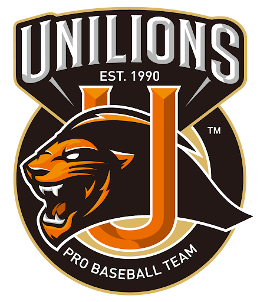

台湾のプロ野球
ここは紹介文
統一ライオンズ
統一獅 Uni Lions

- 創設年：1989
- 縁故地：台南市
- 本拠地球場：台南市立野球場
- 所有： 統一企業
- 歴代チーム名：統一ライオンズ(1989-2007)
→統一セブンイレブン・ライオンズ(2008-2018)
→統一ライオンズ(2019-) - 永久欠番：1、56
- 前・後期リーグ優勝：16回
- リーグ年間優勝：10回
ここは紹介文
中信兄弟
中信兄弟 CTBC Brothers
- 創設年：1984
- 縁故地：台中市
- 本拠地球場：台中インターコンチネンタル野球場
- 所有：中国信託商業銀行
- 歴代チーム名：兄弟飯店棒球隊(1984-1989)
→兄弟エレファンツ(1990-2013)
→中信兄弟(2014-) - 永久欠番：23、67
- 前・後期リーグ優勝：19回
- リーグ年間優勝：10回
ここは紹介文
楽天モンキーズ
樂天桃猿 Rakuten Monkeys
- 創設年：2003
- 縁故地：桃園市
- 本拠地球場：楽天桃園野球場
- 所有：楽天グループ
- 歴代チーム名：第一金剛(2003)
→La Newベアーズ(2004-2010)
→Lamigoモンキーズ(2011-2019)
→楽天モンキーズ(2020-) - 永久欠番：10、52
- 前・後期リーグ優勝：14回
- リーグ年間優勝：7回
ここは紹介文
味全ドラゴンズ
味全龍 Wei Chuan Dragons
- 創設年：1979
- 縁故地：台北市
- 本拠地球場：台北市立天母野球場
- 所有：頂新国際グループ
- 歴代チーム名：味全棒球隊(1979-1989)
→味全ドラゴンズ(1990-1999/2019-) - 永久欠番：85
- 前・後期リーグ優勝：5回
- リーグ年間優勝：5回
ここは紹介文
富邦ガーディアンズ
富邦悍將 Fubon Guardians
- 創設年：1993
- 縁故地：新北市
- 本拠地球場：新荘体育場野球場
- 所有：富邦グループ
- 歴代チーム名：俊国ベアーズ(1993-1995)
→興農ベアーズ(1996)
→興農ブルズ(1996-2012)
→義大ライノズ(2013-2016)
→富邦ガーディアンズ(2017-) - 永久欠番：39
- 前・後期リーグ優勝：10回
- リーグ年間優勝：3回
ここは紹介文
台鋼ホークス
台鋼雄鷹 TSG Hawks
- 創設年：2022
- 縁故地：高雄市
- 本拠地球場：澄清湖野球場
- 所有：台湾鋼鉄グループ
- 歴代チーム名：台鋼ホークス(2022)
- 永久欠番：なし
- 前・後期リーグ優勝：0回
- リーグ年間優勝：0回
ここは紹介文